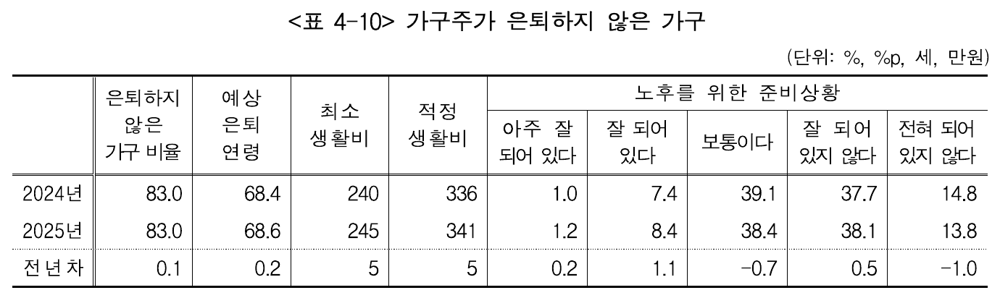

"은퇴 후 매달 받고 싶은 금액"을 입력하면
필요한 자산·매월 적립금·도달 가능 여부를 즉시 역산해드립니다.
국민연금공단·통계청이 발표한 한국인 평균 노후 생활비를 참고하세요. 직접 입력도 가능합니다.

| 기간 | 연평균 | 물가가 몇 배로 |
|---|---|---|
| 최근 10년 (2016~2025) | 2.1% | 1.23배 |
| 최근 20년 (2006~2025) | 2.3% | 1.57배 |
| 최근 30년 (1996~2025) | 2.7% | 2.24배 |
| 나이 | 남 | 여 |
|---|---|---|
| 55세 | 28.1년 | 33.1년 |
| 60세 | 23.7년 | 28.4년 |
| 63세 | 21.2년 | 25.6년 |
| 65세 | 19.5년 | 23.7년 |
| 70세 | 15.5년 | 19.2년 |
| 60세 → | 남 | 여 |
|---|---|---|
| 80세 | 69.7% | 85.6% |
| 85세 | 49.7% | 71.0% |
| 90세 | 26.0% | 47.1% |
| 95세 | 8.3% | 20.9% |
| 100세 | 1.2% | 5.0% |
Trinity Study가 제시한 '4% Rule'은 30년 은퇴 기준 95% 성공률을 보였습니다. 기간이 길수록 인출률은 낮춰야 안전합니다.
현재 나이·기존 자산·매월 적립 가능 금액·예상 수익률을 입력하면 도달 가능 여부를 진단해드립니다.
실제 ETF 데이터 기반 프리셋을 선택하거나 직접 입력하세요. 총수익률 = 배당률 + 시세차익으로 은퇴 시점 자산이 결정되고, 배당성장률은 인출기에 매년 받는 월배당이 늘어나는 속도입니다.
국내·미국 상장 전 종목에서 최대 10개를 담으면, 비중을 10%(또는 5%) 단위로 바꾼 모든 조합을 위에 넣은 목표·나이·적립 조건으로 한 번에 계산합니다. 마음에 드는 조합의 [적용]을 누르면 아래 진단 결과가 그 조합으로 바뀝니다.
현재 나이부터 은퇴 후 자산 소진 시점까지의 흐름. 명목가치 vs 실질가치(물가 반영)를 함께 보여줍니다.
지금 입력한 적립 계획대로 갔을 때와 목표 달성에 필요한 자산을 명목·실질가치로 비교합니다.
매월 얼마씩 적립하느냐에 따라 은퇴 시점 자산이 어떻게 달라지는지 시나리오별로 보여줍니다.
적립기와 인출기 전체 연도별 자산 변화. 명목·실질가치, 연 인출액까지 포함합니다. 인출기에는 매년 초 1년치 생활비를 먼저 꺼내고 남은 자산이 굴러간다고 계산합니다(4% 룰 표준 방식).
| 나이 | 연차 | 국면 | 연 변동 | 총자산 명목 / 실질 |
월 인출액 명목 / 실질 |
|---|